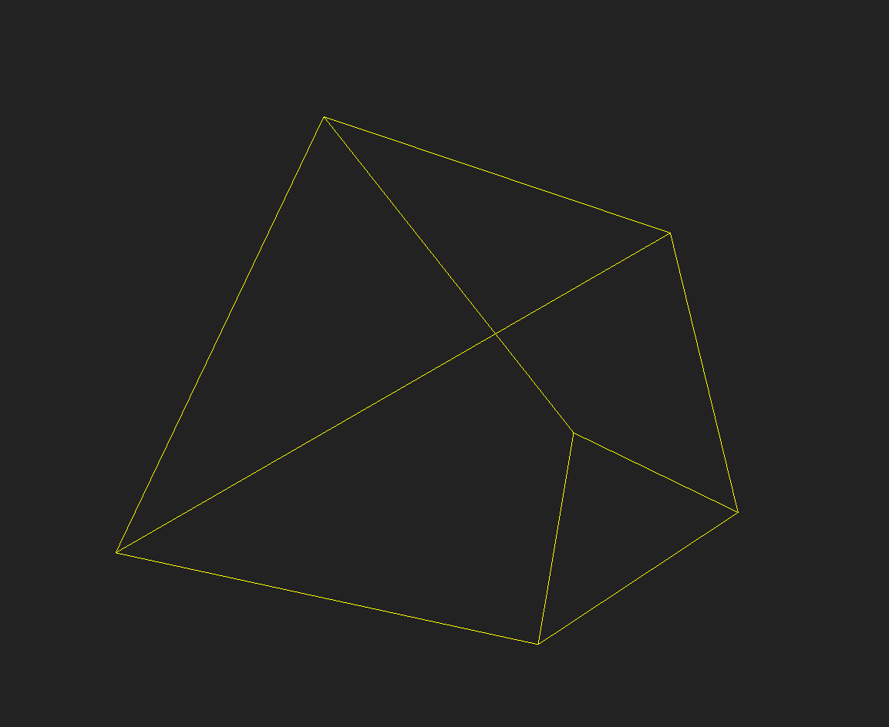

A triangle is the simplest regular figure in 2 dimensions. Its 3 dimensional analogue is a tetrahedron. Its 4 dimensional analogue is the pentatope. Another term for these 3 geometries is: simplex. Many articles online explain these further.
I wanted to view what it would look like if a pentatope passed through our 3-dimensional space. There are many examples of what the projection of a pentatope onto 3-d space would look like (ie its shadow), but I didn’t want to do that because while projections can be pretty, they seem less intuitive than cross-sections.
To summarize, the plan was: take 3-dimensional cross-sections of the pentatope (a 4 dimensional shape). The actual drawing will be done using the 3-dimensional drawing toolkit called three.js.
Our equation for the 3-dimensional cross-section is:
ax+by+cz+K = w
This is a linear equation; we’re not dealing with curved cross-sections for now, though that would be fun. a,b, and c are constants. x,y,z, and w are the 4 axes. K is a constant that we change to get different cross-sections.
But why do we need 4 dimensions to describe a 3-dimensional space? Because we are locating that 3-d space in 4 dimensions. Just as the equation for a plane in 3-d space requires 3 dimensions (e.g. x+y = z describes a plane in 3-d space).
What about our equation for pentatope? Well we don’t have an equation, but we have a collection of points. Our pentatope has 5 corners. Lines connect each point to every other point, resulting in 10 lines. These 10 lines in turn form 10 faces (2-d planes). These 10 faces in turn from 5 3-d tetrahedrons.
Note that in general:
– The intersection of a 4-d line and a 3-d space is a point.
– The intersection of a 4-d plane and a 3-d space is a line.
– The intersection of a 4-d volume and a 3-d space is a plane.
(I say "in general" because there is the special case where the entity intersecting in fact lies
entirely in the subspace. For example a 4-d line could lie entirely in a 3-d space. In that case the intersection is the line itself.)
Our cross-section is going to look like a wire-frame, in other words a collection of lines. So we will capture the intersection of the pentatope’s faces with our cross-sectional space.
Our pseudo-code would look like this:
foreach (face in faces) { // 10 of these
// Each face is a triangle. Lets name the vertices p0, p1, p2. These points have 4-d coords.
// point1 and 2 will be the points we use to draw a line in 3-d space using three.js.
// they have 3-d coords of course.
point1 = calculateIntersectionOfLineWithSpace(p0,p1);
point2 = calculateIntersectionOfLineWithSpace(p0,p2);
drawLineUsingThreeJS(point1, point2);
}
So the interesting bit is in ‘calculateIntersectionOfLineWithSpace()’:
We must use parametric equations to work with lines in dimensions higher than 2. The parametric form for a line defined by the points p0 and p1 is:
p = p0 + t*v (1)
where v = p1 - p0.
We need to calculate what the value of t is at the intersection with our cross-sectional space. (p0 and p1 are the vertices of one of the faces of our pentatope.) So we need to solve for t.
t = (Pt - P0)/V
Pt is the point of intersection of the line with the cross-sectional space. Given our formula above for our 3-d cross-sectional space, the equation for t is:
t = (W0-aX0-bY0-cZ0-K)/(aXv+bYv+cZv-Wv)
Where P0 = (X0, Y0, Z0, W0) and V is (Xv, Yv, Zv, Wv).
Plugging t into equation (1) above we calculate the point of intersection of our 4-d line with our 3-d space. We return (x,y,z) from ‘calculateIntersectionOfLineWithSpace()’ above, discarding w.
And we simply change K to see different cross-sections. The animated result is here.
A still:

 High Dimension Spaces
High Dimension Spaces